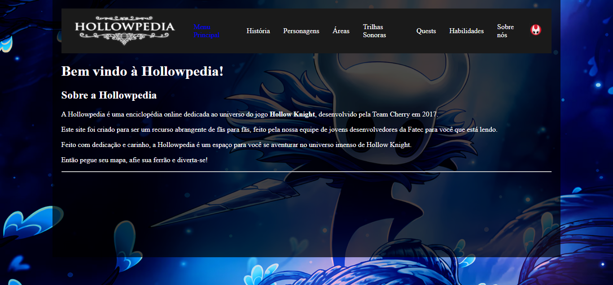

FABIO HENRIQUE ZANCA PEREIRA TENHO ATUALMETE 21 ANOS
Sou estudante de dsm(desenvolvimento de software em multiplataforma) na cidade de marilia, sou uma pessoa que sempre gostei muito de video game e por consequensia acabei me interesando por seu desenvimento e codigos por tras tenho curiosidade em aprender e de estar sempre melhorando proficionalmente.
Desenvolvimento em software em multiplataforma Fatec(em andamento)
Manutenção de microcomputadores-SENAI Pacote Office-SENAI
A Hollowpedia é uma enciclopédia online dedicada ao universo do jogo Hollow Knight, desenvolvido pela Team Cherry em 2017.
Este site foi criado para ser um recurso abrangente de fãs para fãs, feito pela nossa equipe de jovens desenvolvedores da Fatec para você que está lendo.
Feito com dedicação e carinho, a Hollowpedia é um espaço para você se aventurar no universo imenso de Hollow Knight.